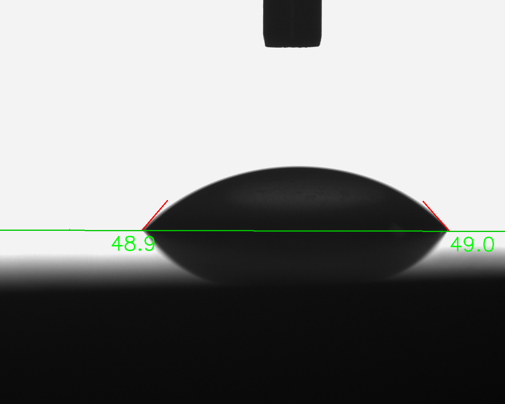

The Physical Problem
Skin-friction drag in wall-bounded turbulent flows is a primary energy drain across aeronautical, marine, and pipe transport systems. Near-wall turbulence is driven by a self-sustaining cycle: elongated quasi-streamwise vortices inclined at $8^\circ{-}10^\circ$ ($y^+ \approx 10{-}40$), low-speed fluid streaks ($\lambda^+ \approx 100$), and energetic sweep ($Q_4$) and ejection ($Q_2$) events that steepen wall shear stress:
$$\tau_{\text{turb}} = -\rho \overline{u' v'} > 0$$
This project investigated whether microstructured surfaces could mechanically suppress these quasi-streamwise vortices and lift turbulent ejections away from the surface without suffering the detrimental form drag that plagues macroscopic roughness.
Key Breakthroughs
28.6%
Peak Drag Reduction vs. Acrylic Reference
28.4%
Peak Drag Reduction vs. Aluminum Reference
119.9°
Contact Angle (Cassie-Baxter Superhydrophobic)
< 5
Dimensionless Sublayer Confinement ($h^+$)
Experimental Channel Facility Specifications
| Parameter |
Symbol / Value |
Physical Role |
| Working Fluid |
Water ($T=30^\circ\text{C}, \rho=996\,\text{kg/m}^3, \nu=0.801\times10^{-6}\,\text{m}^2/\text{s}$) |
Low kinematic viscosity for turbulent flow |
| Channel Dimensions |
$w = 51.2\,\text{mm}, h = 6.4\,\text{mm}$ |
Aspect ratio $w/h = 8$ |
| Hydraulic Diameter |
$D_h = \frac{4A}{P_w} \approx 11.38\,\text{mm}$ |
Modified hydraulic scaling base |
| Flow Rates Tested |
$Q = 0.6, 1.0, 1.4\,\text{m}^3/\text{h}$ |
Bulk velocity $U_b = 0.51{-}1.18\,\text{m/s}$ |
| Reynolds Range |
$Re_{D_h} = 6.8\times 10^3 {-} 1.68\times 10^4$ |
Fully developed turbulent regime |
| Viscous Sublayer |
$\delta_v = 5\nu / u_\tau \approx 57 - 121\,\mu\text{m}$ |
Design criterion for riblet height ($h_d^+ < 5$) |
| Fabrication Tool |
Elegoo Saturn 4 Ultra 16K SLA Printer |
$19\times24\,\mu\text{m}$ pixel resolution in resin |
Why Viscous Sublayer Confinement ($h_d^+ < 5$) Matters
Classical boundary layer theory dictates that within $y^+ < 5$, viscous damping dominates. If microgrooves or denticles remain submerged strictly within this layer, they impede spanwise crossflow fluctuations ($w'$) and prevent quasi-streamwise vortices from sweeping down to the wall. Conversely, when denticles extended into the buffer zone ($y^+ \approx 15-30$), they operated as bluff bodies, generating localized separation and massive 25%–35% form drag penalties.
Comprehensive Drag Reduction Benchmark
Differential pressure drops ($\Delta h$) acquired via U-tube manometry across test specimens:
| Surface Texture |
Orientation |
$Q = 0.6\,\text{m}^3/\text{h}$ |
$Q = 1.0\,\text{m}^3/\text{h}$ |
$Q = 1.4\,\text{m}^3/\text{h}$ |
Mean DR |
| Rectangular Microgrooves |
Streamwise ($\parallel$) |
+22.6% |
+25.8% |
+28.6% |
+25.7% (Optimal) |
| Triangular Riblets ($60^\circ$) |
Streamwise ($\parallel$) |
+2.9% |
+8.2% |
+15.8% |
+9.0% |
| Trapezoidal Microgrooves |
Streamwise ($\parallel$) |
+11.4% |
+14.7% |
+18.2% |
+14.8% |
| Rectangular Microgrooves |
Perpendicular ($\perp$) |
-28.5% |
-33.1% |
-41.2% |
-34.3% (Form Drag Penalty) |
| Full-Scale Shark Denticles (1.0x) |
Aligned |
-19.4% |
-26.8% |
-35.2% |
-27.1% (Buffer Protrusion) |
Wettability & Cassie-Baxter Transition
Rectangular microgrooves elevated the apparent contact angle from $48.9^\circ$ to $119.9^\circ$. The trapped air pocket within the microgroove grooves creates a shear-free liquid-gas interface (slip boundary condition), reducing contact area and further mitigating wall shear stress.
CAD Loop Assembly
Fabricated Test Rig
Dimensioned Profiles
Drag Reduction Benchmark

Flat Acrylic ($\theta = 48.9^\circ$)
Rectangular Microgrooves ($\theta = 119.9^\circ$)
Official Academic Documents
Complete Bachelor Thesis (PDF)
Full 100+ page dissertation with comprehensive literature review, dimensionless mathematical derivations, calibration data, and thesis defense findings.
Download Thesis (9.3 MB)
Defense Presentation Deck (PDF)
LaTeX Beamer slide deck presented to the examining faculty committee at Sharif University of Technology.
Download Presentation (6.2 MB)
BibTeX Citation
@thesis{javadi2026coherent,
title={Using Coherent Structures to Reduce Drag Force: Experimental Investigation of Passive Microgrooves and Bio-Inspired Shark Denticles in Duct Flow},
author={Javadi, Keihan},
supervisor={Dr. Mousavi},
school={Sharif University of Technology, Department of Mechanical Engineering},
address={Tehran, Iran},
year={2026},
month={September},
type={Bachelor's Thesis}
}